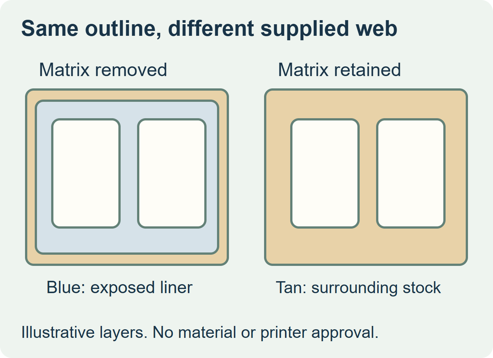
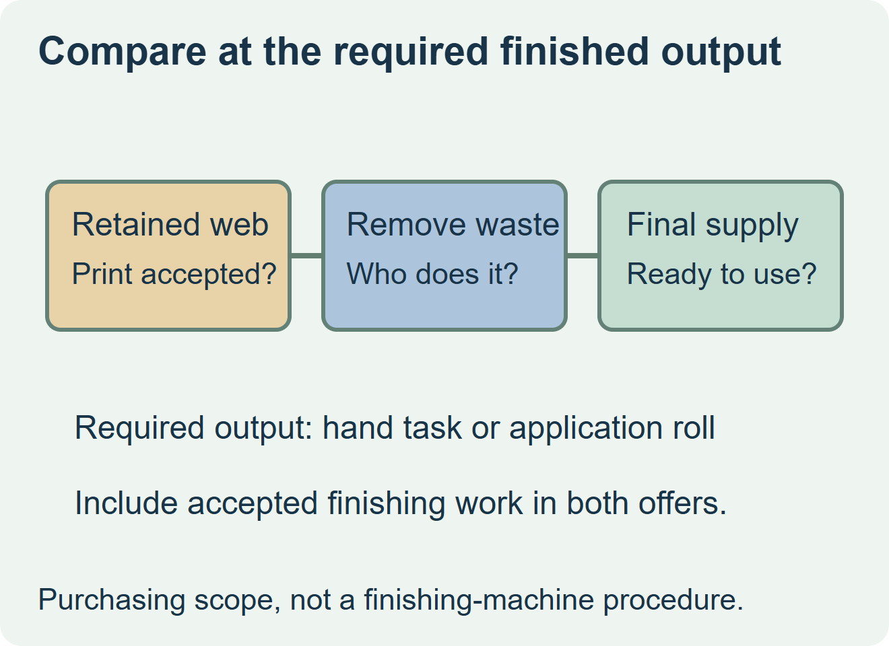

Buy matrix-removed blanks when the confirmed printer workflow and required final output use that web. Buy retained-matrix blanks only when the printer supports the complete supplied construction and someone has accepted the later waste-handling work. Compare the two routes at usable finished labels, not at equal-size blank rectangles. The decision is when and by whom the surrounding material is removed.


Identify the material around the cut labels
The matrix is the surrounding face material left outside the die-cut label boundaries. Removing it exposes backing between and around the labels; retaining it leaves that surrounding material on the backing. The label outline may be identical in both proposals. Retained matrix is not the same as an uncut continuous roll, and it does not turn a spaced die-cut design into a butt-cut layout.
Ask the supplier to state the delivered matrix condition on the quote and web drawing. A detached blank label cannot show what remains around it on the supplied roll. Identify the agreed printed and finished output as a separate deliverable, including any operation retained by the buyer. Do not infer finishing scope from a stock photograph.
Separate edge printing from the physical cut
Show the cut outline and intended printed area on the same web drawing. If print extends beyond the label edge, identify what surface lies beneath that extension: surrounding face material or exposed liner. Keeping the matrix does not approve the file, ink behaviour or edge appearance. Removing it does not make every supported printing job unsuitable.
Primera’s LX-series overbleed guidance describes extending the printed image past the label boundary and warns about excess ink on backing and detection problems. Use the actual printer supplier’s supported approach; this article supplies no universal bleed amount or driver setting. Request a representative printed web rather than judge the result from an isolated finished label.


Confirm how the actual supplied web is detected
A geometric space between cut outlines is not necessarily an exposed-liner gap. With the surrounding matrix still present, the printer sees a different material arrangement. Ask its owner to confirm the accepted detection method and the corresponding mark or web drawing for that model.
Primera’s custom-order guidance calls for a black timing mark on its retained-matrix custom label stock. Treat that as a supplier-specific requirement, not a claim that every printer or retained-matrix roll uses the same mark. Do not copy its orientation, dimensions or commercial terms into another supplier’s order.
| Comparable deliverable | Matrix removed before delivery | Matrix retained for printing |
|---|---|---|
| Blank input | Cut labels with the agreed surrounding material already removed. | Cut labels plus the identified surrounding material on the backing. |
| Printer acceptance | Actual media, detection and edge-print output. | Actual media including retained material, supported detection and edge-print output. |
| After printing | Confirm the output required by hand or machine application. | Identify who removes surrounding waste and supplies the required finished output. |
| Cost comparison | Confirmed blank supply plus printing and remaining work. | Confirmed blank supply plus printing, accepted waste removal and remaining work. |
Approve the work after printing as well as the print
For a hypothetical jam brand, a retained-matrix sample prints acceptably, but the co-packer expects finished single-lane rolls ready for its applicator. Printing success has not supplied that output. The buyer must confirm a finishing route, its usable yield, winding and handoff, or compare a supported matrix-removed alternative. Do not assume the co-packer will take on waste removal because the nominal label size is correct.
Manual application may use another accepted sequence. Observe the actual task and identify where the surrounding waste goes; do not assume an operator can remove every shape cleanly or that a machine-ready roll can be produced by hand. Intricate-shape manufacturability remains with the converter and the linked shape-review guide.
Keep the proposed blank reference, matrix state, printer evidence and agreed finished output together. Include actual finishing charges, process use and handling where relevant, leaving unknown quantities unresolved. No percentage saving, universal waste allowance, supplied finishing equipment or ZFU blank-stock compatibility is established by this comparison.
Discuss the unresolved label requirement
Send printer model, exact blank material reference, cut/repeat and matrix drawing, intended detection feature, edge artwork, final hand or machine application format, quantities and who performs any later finishing. Review food label options and prepare a label specification inquiry. The contact page opens an email draft and lists email or WhatsApp for attachments. Supply, proof options, testing, pricing and timing require project confirmation.